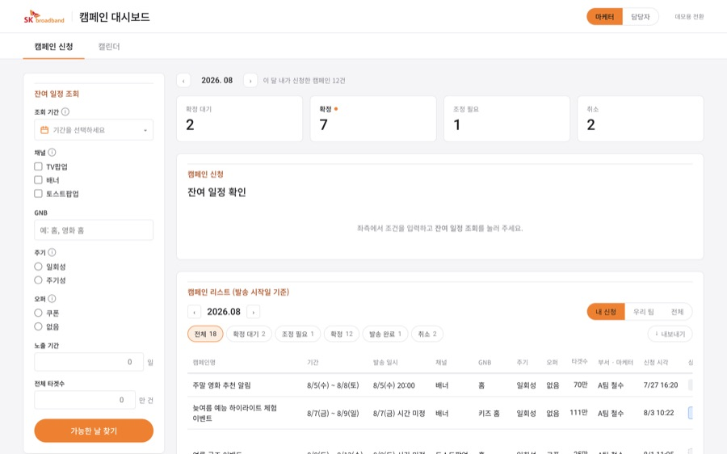

써니C
Define
SK브로드밴드는 여러 마케팅 팀의 캠페인을 채널별 하루 발송량 안에서 맞춰 내보내야 함
구글 시트로 신청을 받아 담당자 한 명이 손으로 계산하는데, 남은 발송량 표엔 확정된 건만 반영됨
마케터와 담당자가 같은 현황을 보지 못해 확인과 조율이 끝없이 오감
Process
팀장. 일정과 회의를 이끌고 대시보드 화면 개발, 소개 영상 제작, 발표까지 맡음. 팀원 간 AI 활용 격차를 줄이려 Claude Code 수업 진행
SK브로드밴드 현업 미팅에서 "급한 건은 시트에 적고 담당자에게 바로 슬랙을 한다"는 이야기를 듣고 원인을 따라감
사람이 느린 게 아니라 대기 중인 신청이 표에 안 잡히는 구조. 그래서 신청하는 순간 남은 발송량을 자동으로 확인하고, 조정이 필요한 건만 담당자에게 넘기는 구조로 결정
유저 테스트 15명. 색이 많아 헷갈린다는 피드백에 색을 통일하고, 캘린더에 날짜별 남은 발송량을 표시
Result
신청부터 확정까지 담당자가 개입하는 단계를 5단계에서 1단계로 줄이도록 설계한 대시보드
현업 구글 시트를 그대로 올려 쓰는 실무 도입 키트까지 제작
써니C 5기 최우수상
Tool
Claude Code, Adobe Illustrator, Higgsfield
